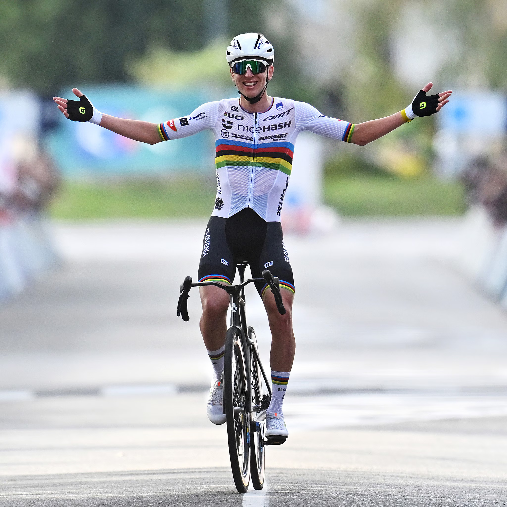

Tadej Pogačar: la stagione dei record
Tadej Pogačar ha completato una stagione semplicemente leggendaria. Nel 2025 lo sloveno dell’UAE Team Emirates ha dominato in lungo e in largo, vincendo **Giro d’Italia**, **Tour de France**, e il **Campionato del Mondo su strada**. Un triplete che nessuno riusciva a realizzare dai tempi di Eddy Merckx.
La sua cavalcata rosa è stata una dimostrazione di forza e controllo. Ha vinto cinque tappe al Giro, staccando tutti sullo Stelvio e controllando con calma fino a Roma. Poche settimane dopo, al Tour, ha resistito a Vingegaard in montagna e trionfato a Parigi, scrivendo la storia.
A coronare una stagione perfetta è arrivato il titolo mondiale in Belgio, dopo uno sprint magistrale. Pogačar si conferma il simbolo di una nuova era del ciclismo: moderno, aggressivo, ma rispettoso della tradizione.